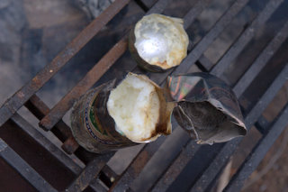
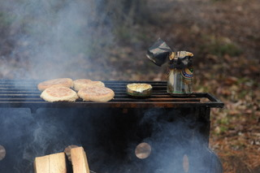
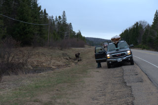
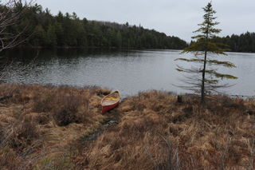
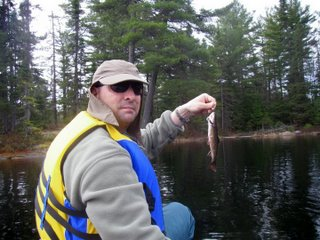
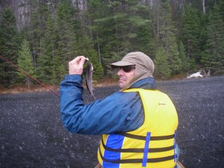

This year, for our usual annual opening weekend brook trout trip, we decided to reduce the rain threat risk by doing a day trip, which could turn into car camping trip (or not) depending on the actual rain conditions. If the weather got really bad, we would high tail it home pretty fast. Turns out, at the end of the day, the rain was minimal and the cold beer was calling my name so we decided to stay. Car camping is deluxe in many ways, we can have a big tent, cold beer, chairs to sit in, easy setup and plenty of room. This early in the season, the campgrounds are not packed (this one had many fishermen) so the place feels like we have it to ourselves.
Our evening went very well. We cooked sausages on the fire, some rice and washed it down with many cold units of malted goodness. We borrowed some wood from a nice storage pile at the campground gates, added to it the big downed tree in our campsite and proceeded to have a nice warm comfortable fire to sit around.
  The camp setup was pretty basic, we had a couple of chairs, beer, and a monster fire to cook our food on. We did breakfast on the fire, and in our innovation moods, we created a first for us, a beer can egg white omelete. This consisted of an empty beer can (we had plenty), fill with egg whites (don't ask) and left in the fire for a long long time. They we scrape it out, and despite the cooking method, it was not burnt. We put it on english muffins, with bacon and cheese to fill out the calories.
  The de-riguer viewing of a moose by the side of the road was followed quickly by about 6-7 cars all stopping to watch this poor animal eat some roadside weeds. Some of these people get pretty darn close too - they kind of forget the size of these animals and how dangerous they could be should you tick one off. We snapped a pic and moved on.
We picked a lake that had no one on it. All to ourself, a little wind but not too bad we could cover the whole lake. The only draw back was the cold. Approximately 1 celsius all day and rain so our hands suffered in the rain. Regardless, a brookie was tempted to bite and we were able to keep the skunk off on the second day in a row.
The fishing was good at times (when it rained or was cloudy) and sucked in the sunshine. The bite was so good during the rain, we stayed out in it reeling in brookie after brookie. Most were smaller, but they are still gorgeous fish.
 No question, great trip. Proof is in the happy Pete.
{kind=link}
{kind=link}
{kind=link}
{kind=link}